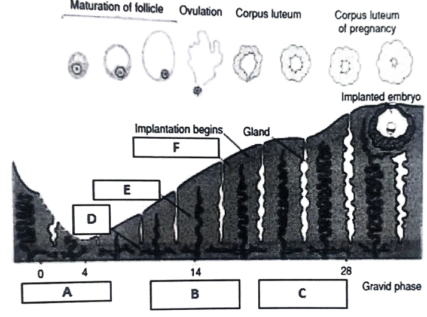
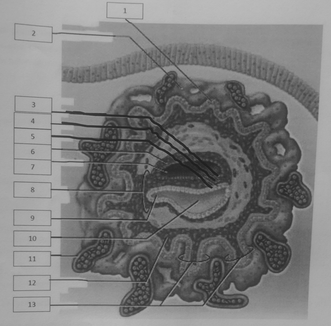
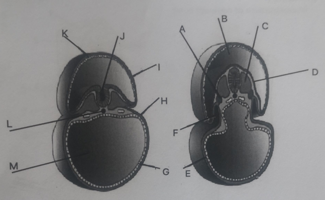
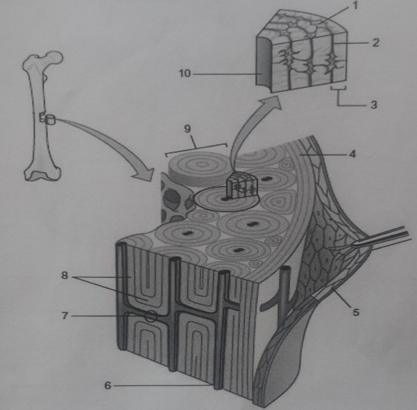
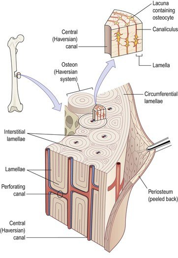
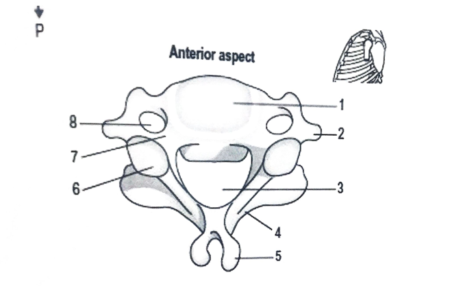

a) The notochord is a flexible, rod-like structure derived from the mesoderm that serves as the primary longitudinal skeletal element in the early embryo.
b) Functions: It acts as the primary inducer for the overlying ectoderm to form the neural plate and provides mechanical support.
Fate: Degenerates and disappears as the bodies of the vertebrae develop,
but it persists as the nucleus pulposus of each intervertebral disc and
its cranial continuation the apical ligament of dens of axis vertebra.
Remnants of notochordal tissue give rise to both benign and
malignant tumors called Chordomas
a) Capacitation is the series of functional changes that cause the sperm’s tail to beat even more vigorously. It prepares the sperms plasma membrane to fuse with the oocyte’s plasma membrane.
b) It typically requires about 7 hours. Changes include the removal of the glycoprotein coat/seminal plasma proteins from the plasma membrane that overlies the acrosomal region of the spermatozoa.
a) The body is standing erect, facing forward, feet flat on the floor and slightly apart, with arms at the sides and palms facing forward (supinated).
b) It provides a universal standard reference point, ensuring that directional terms (like superior or lateral) remain consistent regardless of the patient's actual movement or posture.
1. Ectoderm: Central nervous system, epidermis of skin, mammary glands.
2. Mesoderm: Skeletal muscle, cardiovascular system, dermis of skin.
3. Endoderm: Epithelial lining of the GI tract, liver, pancreas.

a) A: Menstrual phase; B: Proliferative phase; C: Secretory phase.
b) D: Stratum Basale; E: Stratum spongiosum; F: Stratum Compactum. E and f (Functional layer) are supplied by spiral arteries; F is supplied by straight arteries.
c) Myometrium and Perimetrium.
d) Simple tubular glands.
e) (i) LH surge; (ii) Estrogen.
f) (i) Excessive/prolonged menstrual bleeding; (ii) Painful menstruation; (iii) Bleeding between periods.
a) Chorion frondosum.
b) Decidua basalis.
c) Foetal portion is smooth/covered by amnion, it is Derived from the Chorionic plate, Supplied by the Umbilical Arteries, consists of chorionic villi and the intervillous spcae. Maternal portion is rough amd dull and divided into lobules (cotyledons), Derived from the decidua basalis, supplied by the spiral arteries, consists of the decidual plate and placental septa.
d) Human Chorionic Gonadotropin (maintains corpus luteum), Human Chorionic Somatotropin (anti-insulin effect on the mother making the glucose more available for the fetus), Human Chorionic Thyrotropin (increases the rate of metabolism through out pregnancy), Human Chorionic corticotropin (Stimulates the pitutar gland to produce ACTH).
e) Based on the shape it is a Discoid Placenta (round/disc like) and it is Hemochorial placenta based on the fact that maternal blood coomes into direct contact with the foetal chorionic epithelium.
f) From the outermost to the innermost we have; Syncytiotrophoblast, Cytotrophoblast, Connective tissue of villus, Endothelium of foetal capillaries.
a) Cresyl Violet (Nissl stain) for neurons.
b) The Outer Layer of the Meninges, the Dura Mater, is primarily made up of type 1 collagen fibres.
c) The Cells of the Choroid Plexus are cheifly repsonsoible for the production of the CSF using the RER for synthesis and the Golgi Appartus for secretion.
d) Tight junctions.
a) Keratinized stratified squamous epithelium (thick skin).
b) Pacinian Corpuscles.
c) Desmoplakin, a protein that makes up the actual desmosome anchors to the keratin intermediate filaments.
i) Aneuploid: Abnormal number of chromosomes where the numbers are not an exact multiple of th haploid set.
ii) Trisomy: 3 copies in a chromosome instead of 2 (e.g., Down Syndrome T21, Edwards T18).
iii) Monosomy: 1 copy in a a chromosome instead of 2 (e.g., Turner Syndrome 45,X).
iv) Nondisjuction during cell division where the paried chromatids fail to seperate evenly.
v) Structural chromosomal abnormalities are changes in the structure of chromosomes, such as deletions, duplications, inversions, or translocations.
vi) Prader-Willi Syndrome (Paternal deletion) and Angelman Syndrome (Maternal deletion).
a) Skeletal Muscle.
b) Sarcoplasmic Reticulum.
c) Type 1 muscle fibres.
d) Acetylcholine.
a) A cross-section should show: 2 Umbilical Arteries, 1 Umbilical Vein, Mucoid connective tissue (Wharton’s Jelly), and a lining of Amniotic Epithelium.
b) 1. Mesenchyme; 2. Mucous (Mucoid) connective tissue.
c) Mesenchyme: Undifferentiated mesenchymal cells (Star-shaped cells), sparse reticular fibers, semi-fluid ground substance. Mucoid: Fibroblasts, collagen fibers (Type i and iii mostly), and a jelly-like (gelatinous) ground substance called Wharton's Jelly.
d) The Connective Tissue of the Head and Neck is primarily derived from Ectomesenchyme which is derived from Neural Crest Cells.

| 1. Cytotrophoblast | 8. Embryonic Stalk |
| 2. Syncytiotrophoblast | 9. Allantois |
| 3. Ectoderm | 10. Yolk sac (Secondary) |
| 4. Mesoderm | 11. Lacuna |
| 5. Endoderm | 12. Extraembryonic coelom |
| 6. Amnion | 13. Chorionic villi |
| 7. Amnion Cavity |

| A. Intermediate Mesoderm | H. Splanchnic (Visceral) Mesoderm |
| B. Amnionic Cavity | I. Splanchnopleuric (Parietal) Mesoderm |
| C. Paraxial Mesoderm | J. Neural groove |
| D. Surface Ectoderm | K. Amnion |
| E. Surface Endoderm | L. Notocord |
| F. Intraembryonic Coelom | M. Yolk Sac |
| G. Surface Endoderm |



| 1. Body | 6. Superior Articular facet |
| 2. Posterior Tubercle | 7. Pedicle |
| 3. Vertebral Foramen | 8. Foramen Transvesarium |
| 4. Lamina | |
| 5. Bifid Spine |